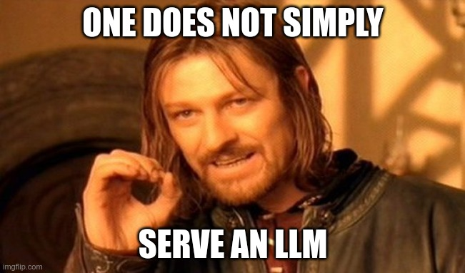

LLMs, Chatbots, Talk with your Documentation
Info
All source files and examples used in this article are available on this repo!
LLMs (Large Language Models) are the subject of the day. And of course, you can definitely work with them on OpenShift with ODH or RHODS, from creating a simple Chatbot, or using them as simple APIs to summarize or translate texts, to deploying a full application that will allow you to quickly query your documentation or knowledge base in natural language.
You will find on this page instructions and examples on how to set up the different elements that are needed for those different use cases, as well as fully implemented and ready-to-use applications.
Context and definitions
Many people are only beginning to discover those technologies. After all, it has been less than a year since the general public is aware of them, and many related technologies, tools or applications are only a few months, even weeks (and sometimes days!) old. So here are a few definitions of the different terms that will be used in this article.
- LLM: A Large Language Model (LLM) is a sophisticated artificial intelligence system designed for natural language processing. It leverages deep learning techniques to understand and generate human-like text. LLMs use vast datasets to learn language patterns, enabling tasks like text generation, translation, summarization, and more. These models are versatile and can be fine-tuned for specific applications, like chatbots or content creation. LLMs have wide-ranging potential in various industries, from customer support and content generation to research and education, but their use also raises concerns about ethics, bias, and data privacy, necessitating responsible deployment and ongoing research.
- Fine-tuning: Fine-tuning in the context of Large Language Models (LLMs) is a process of adapting a pre-trained, general-purpose model to perform specific tasks or cater to particular applications. It involves training the model on a narrower dataset related to the desired task, allowing it to specialize and improve performance. Fine-tuning customizes the LLM's capabilities for tasks like sentiment analysis, question answering, or chatbots. This process involves adjusting hyperparameters, data preprocessing, and possibly modifying the model architecture. Fine-tuning enables LLMs to be more effective and efficient in specific domains, extending their utility across various applications while preserving their initial language understanding capabilities.
- RAG: RAG, or Retrieval-Augmented Generation, is a framework in natural language processing. It combines two key components: retrieval and generation. Retrieval involves selecting relevant information from a vast knowledge base, like the internet, and generation pertains to creating human-like text. RAG models employ a retriever to fetch context and facts related to a specific query or topic and a generator, often a language model, to produce coherent responses. This approach enhances the quality and relevance of generated text, making it useful for tasks like question answering, content summarization, and information synthesis, offering a versatile solution for leveraging external knowledge in AI-powered language understanding and production.
- Embeddings: Embeddings refer to a technique in natural language processing and machine learning where words, phrases, or entities are represented as multi-dimensional vectors in a continuous vector space. These vectors capture semantic relationships and similarities between words based on their context and usage. Embeddings are created through unsupervised learning, often using models like Word2Vec or GloVe, which transform words into fixed-length numerical representations. These representations enable machines to better understand and process language, as similar words have closer vector representations, allowing algorithms to learn contextual associations. Embeddings are foundational in tasks like text classification, sentiment analysis, machine translation, and recommendation systems.
- Vector Database: A vector database is a type of database designed to efficiently store and manage vector data, which represents information as multidimensional arrays or vectors. Unlike traditional relational databases, which organize data in structured tables, vector databases excel at handling unstructured or semi-structured data. They are well-suited for applications in data science, machine learning, and spatial data analysis, as they enable efficient storage, retrieval, and manipulation of high-dimensional data points. Vector databases play a crucial role in various fields, such as recommendation systems, image processing, natural language processing, and geospatial analysis, by facilitating complex mathematical operations on vector data for insights and decision-making.
- Quantization: Model quantization is a technique in machine learning and deep learning aimed at reducing the computational and memory requirements of neural networks. It involves converting high-precision model parameters (usually 32-bit floating-point values) into lower precision formats (typically 8-bit integers or even binary values). This process helps in compressing the model, making it more lightweight and faster to execute on hardware with limited resources, such as edge devices or mobile phones. Quantization can result in some loss of model accuracy, but it's a trade-off that balances efficiency with performance, enabling the deployment of deep learning models in resource-constrained environments without significant sacrifices in functionality.
Fun fact: all those definitions were generated by an LLM...
Do you want to know more?
Here are a few worth reading articles:
LLM Serving
LLM Serving is not a trivial task, at least in a production environment...

- LLMs are usually huge (several GBs, tens of GBs...) and require GPU(s) with enough memory if you want decent accuracy and performance. Granted, you can run smaller models on home hardware with good results, but that's not the subject here. After all we are on OpenShift, so more in a large organization environment than in an enthusiastic programmer basement!
- A served LLM will generally be used by multiple applications and users simultaneously. Since you can't just throw resources at it and scale your infrastructure easily because of the previous point, you want to optimize response time by for example batching queries, caching or buffering them,... Those are special operations that have to be handled specifically.
- When you load an LLM, there are parameters you want to tweak at load time, so a "generic" loader is not the best suited solution.
LLM Serving solutions
Fortunately, we have different solutions to handle LLM Serving:
- Caikit-TGIS-Serving is a solution already available in ODH, soon to be included in RHODS, specially designed to serve LLMs. You will find all installation instructions on its repo.
- Hugging Face Text Generation Inference is another solution that you can deploy on OpenShift following those installation instructions.
What are the differences between the two?
- At the moment, the Caikit+TGIS stack installation may be a little bit more complicated, requiring different operators, configuration, certificate generation...
- Also, at the moment, Caikit+TGIS has a gRPC interface only, which makes it more complicated to use, especially with other tools and SDKs that may not have integration with it.
- HF TGI, while easier and providing a REST interface, comes with a caveat: its special license does not allow you to use it for a business that would provide on-demand LLM endpoints. You can totally use it for your own chatbots, even commercially (meaning the chatbots will be used by customers). But you cannot use it to make a business of simply hosting and serving LLMs.
Which model to use?
In this section we will assume that you want to work with a "local" open source model, and not consume a commercial one through an API, like OpenAI's ChatGPT or Anthropic's Claude.
There are literally hundreds of thousands of models available, almost all of them available on the Hugging Face site. If you don't know what this site is, you can think of it as what Quay or DockerHub are for containers: a big repository of models and datasets ready to download and use. Of course Hugging Face (the company) is also creating code, providing hosting capabilities,... but that's another story.
So which model to choose will depend on several factors:
- Of course how good this model is. There are several benchmarks that have been published, as well as constantly updated rankings.
- The dataset it was trained on. Was it curated or just raw data from anywhere, does it contain nsfw material,...? And of course what the license is (some datasets are provided for research only or non-commercial).
- The license of the model itself. Some are fully open source, some claim to be... They may be free to use in most cases, but have some restrictions attached to them (looking at you Llama2...).
- The size of the model. Unfortunately that may be the most restrictive point for your choice. The model simply must fit on the hardware you have at your disposal, or the amount of money you are willing to pay.
Currently, a good model with interesting performance for a relatively small size is Mistral-7B. Fully Open Source with an Apache 2.0 license, it will fit in an unquantized version on about 22GB of VRAM, which is perfect for an A10G card.
LLM Consumption
Once served, consuming an LLM is pretty straightforward, as at the end of the day it's only an API call.
- For Caikit+TGIS you will find here a notebook example on how to connect and use the gRPC interface.
- As HF TGI provides a REST interface, its usage is more straightforward. Here is the full API Swagger doc (also available when you deploy the server yourself).
However, for easier consumption and integration with other tools, a few libraries/SDKs are available to streamline the process. They will allow you to easily connect to Vector Databases or Search Agents, chain multiple models, tweak parameters,... in a few lines of code. The two main libraries at the time of this writing are Langchain and Haystack.
In the LLM on OpenShift repo, you will find several notebooks and full UI examples that will show you how to use those libraries with both Caikit+TGIS and HF-TGI to create your own Chatbot!
RAG Chatbot Full Walkthrough
Although the available code is normally pretty well documented, especially the notebooks, giving a full overview will surely help you understand how all of the different elements fit together.
For this walkthrough we will be using this application, which is a RAG-based Chatbot that will use a Redis database as the vector store, Hugging Face Text Generation Inference for LLM serving, Langchain as the "glue" between those components, and Gradio as the UI engine.
Requirements
- An OpenShift cluster with RHODS or ODH deployed.
- A node with a GPU card. For the model we will use, 24GB memory on the GPU (VRAM) is necessary. If you have less than that you can either use quantization when loading the model, use an already quantized model (results may vary as they are not all compatible with the model server), or choose another compatible smaller model.
- If you don't want to have to manually install different requirements in the notebooks environment (mostly Langchain and its dependencies), which may take time, you may want to directly import this custom workbench image, quay.io/opendatahub-contrib/workbench-images:cuda-jupyter-langchain-c9s-py311_2023c_latest, inside your RHODS/ODH environment. It comes pre-installed with Langchain and many other LLM-related tools. If you don't know how to do this, see the instructions here.
Model Serving
Deploy an HF-TGI instance following the instructions available here.
The model we want to use is Mistral-7B-Instruct as it has been specially fine-tuned for chat interactions. Our deployment must therefore be modified by changing the environment parameters as follows:
env:
- name: MODEL_ID
value: mistralai/Mistral-7B-Instruct-v0.1
- name: MAX_INPUT_LENGTH
value: '1024'
- name: MAX_TOTAL_TOKENS
value: '2048'
- name: HUGGINGFACE_HUB_CACHE
value: /models-cache
- name: PORT
value: '3000'
- name: HOST
value: 0.0.0.0
What has changed compared to the original deployment is:
- The MODEL_ID, now
mistralai/Mistral-7B-Instruct-v0.1 - QUANTIZATION has been removed. Again, this depends on your VRAM availability.
Once the model is deployed, you can test it as indicated in the instructions on the repo:
Vector Store
Redis deployment
For our RAG we will need a Vector Database to store the Embeddings of the different documents. In this example we are using Redis.
Deployment instructions are available here.
After you follow those instructions you should have a Database ready to be populated with documents.
Document ingestion
In this notebook you will find detailed instructions on how to ingest different types of documents: PDFs first, then Web pages.
The examples are based on RHODS documentation, but of course we encourage you to use your own documentation. After all that's the purpose of all of this!
This other notebook will allow you to execute simple queries against your Vector Store to make sure it works alright.
Testing
Now let's put all of this together!
This notebook requires only information about your Model Server (the Inference URL) and about your Vector store.
- It will first initialize a connection to the vector database (embeddings are necessary for the Retriever to "understand" what is stored in the database):
embeddings = HuggingFaceEmbeddings()
rds = Redis.from_existing_index(
embeddings,
redis_url=redis_url,
index_name=index_name,
schema=schema_name
)
- A prompt template is then defined. You can see that we will give it specific instructions on how the model must answer. This is necessary if you want to keep it focused on its task and not say anything that may not be appropriate (on top of getting you fired!). The format of this prompt is originally the one used for Llama2, but Mistral uses the same one. You may have to adapt this format if you use another model.
template="""<s>[INST] <<SYS>>
You are a helpful, respectful and honest assistant.
You will be given a question you need to answer, and a context to provide you with information. You must answer the question based as much as possible on this context.
Always answer as helpfully as possible, while being safe. Your answers should not include any harmful, unethical, racist, sexist, toxic, dangerous, or illegal content. Please ensure that your responses are socially unbiased and positive in nature.
If a question does not make any sense, or is not factually coherent, explain why instead of answering something not correct. If you don't know the answer to a question, please don't share false information.
<</SYS>>
Question: {question}
Context: {context} [/INST]
"""
- Now we will define the llm connection itself. As you can see there are many parameters you can define that will modify how the model will answer. Details on those parameters are available here.
llm = HuggingFaceTextGenInference(
inference_server_url=inference_server_url,
max_new_tokens=512,
top_k=10,
top_p=0.95,
typical_p=0.95,
temperature=0.1,
repetition_penalty=1.175,
streaming=True,
callbacks=[StreamingStdOutCallbackHandler()]
)
- And finally we can tie it all together with a specific chain, RetrievalQA:
qa_chain = RetrievalQA.from_chain_type(llm,
retriever=rds.as_retriever(search_type="similarity", search_kwargs={"k": 4, "distance_threshold": 0.5}),
chain_type_kwargs={"prompt": QA_CHAIN_PROMPT},
return_source_documents=True)
- That's it! We can now use this chain to send queries. The retriever will look for relevant documents in the Vector Store, their content will be injected automatically in the prompt, and the LLM will try to create a valid answer based on its own knowledge and this content:
question = "How can I work with GPU and taints?"
result = qa_chain({"query": question})
- The last cell in the notebook will simply filter for duplicates in the sources that were returned in the
result, and display them:
def remove_duplicates(input_list):
unique_list = []
for item in input_list:
if item.metadata['source'] not in unique_list:
unique_list.append(item.metadata['source'])
return unique_list
results = remove_duplicates(result['source_documents'])
for s in results:
print(s)
Application
Notebooks are great and everything, but it's not what you want to show to your users. I hope...
So here is a simple UI you can put around the same code we used in the notebooks.
The deployment is already explained in the repo and pretty straightforward as the application will only "consume" the same Vector Store and LLM Serving we have used in the notebooks. However I will point out some specificities:
- As you should have noticed on the document ingestion part, a schema has been created for your index when you imported the first documents. This schema must be included in a ConfigMap that will be mounted in the Pod at runtime. This allows for a more generic Pod image that will work with any schema you will define (there are many things you can do here, like adding metadata, but that's a story for another time...).
- Don't forget to put your Inference Server and Redis information in the environment variables of the Deployment! This one is scaled down to zero initially to give you time to do it properly, so don't forget to scale it up before opening an issue because the deployment does not start...
Some info on the code itself (app.py):
load_dotenv, along with theenv.examplefile (once renamed.env) will allow you to develop locally.- As normally your Redis server won't be exposed externally to OpenShift, if you want to develop locally you may want to open a tunnel to it with
oc port-forward pod-name 14155:14155(replace with the name of the Redis Pod where the Service is connected and the ports used). You can use the same technique for the LLM endpoint if you have not exposed it as a route. - The class
QueueCallbackwas necessary because theHuggingFaceTextGenInferencelibrary used to query the model does not return an iterator in the format Langchain expects it (at the time of this writing). So instead this implementation of the Callback functions for the LLM puts the new tokens in a Queue (L43) that is then retrieved from continuously (L78), with the content being yielded for display. This is a little bit convoluted, but the whole stack is still in full development, so sometimes you have to be creative... - Gradio configuration is pretty straightforward trough the ChatInterface component, only hiding some buttons, adding an avatar image for the bot,...
Here is what you RAG-based Chatbot should look like (some tweaking on the App title that you can do through the environment variable):